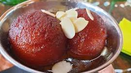

GulabJamun

Description
Gulab jamun is a sweet confectionary or dessert, originating in the Indian subcontinent and a type of mithai popular in India, Pakistan, Nepal, the Maldives, and Bangladesh, as well as Myanmar.
Ingredients
- khoya
- Wheat flour
- Baking Soda
Steps
- Boil sugar and water to prepare syrup remove from fire. Add cardamom and keep aside to cool.
- In a mixing bowl put the flour, paneer, sooji, Nestlé MILKMAID, baking powder and baking soda. Mix gently to make a soft dough. Do not knead too much
- Divide the mixture into 30-35 portions and gently roll into round gulab jamuns. Fry in the oil at very low flame till golden brown in color.
- Keep putting the fried gulab jamuns in the prepared sugar syrup. Once all the gulab jamuns are in the sugar syrup bring it to a boil and remove from flame.